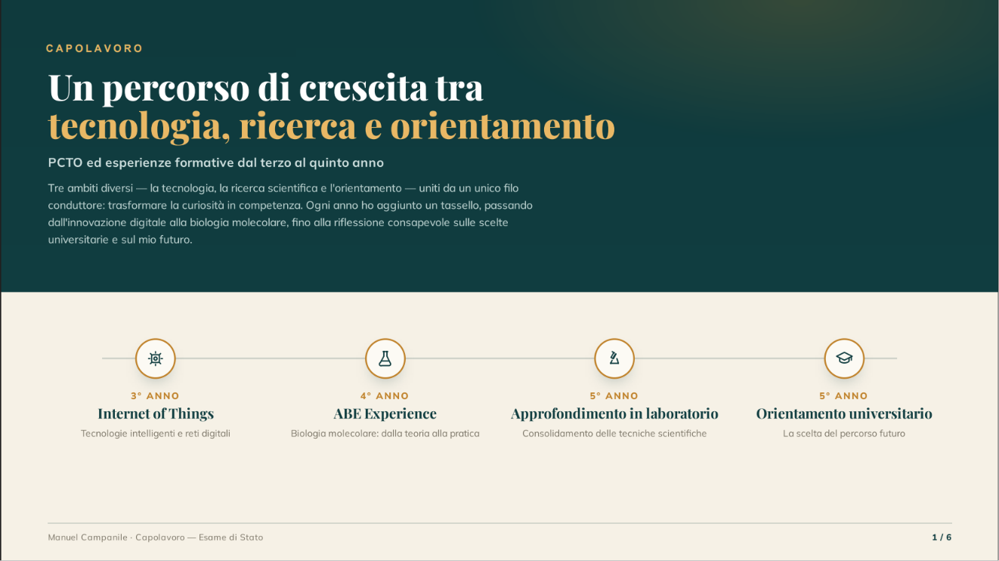

Torna alla home

FSL (ex PCTO)
Il percorso di formazione svolto tra orientamento, competenze, attività e crescita personale, con particolare attenzione alle esperienze che hanno contribuito al mio sviluppo scolastico e futuro.